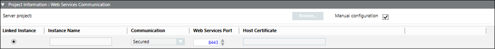

Project Information: Web Services Communication Expander on Client/FEP
This allows you to configure the server project details for linking to the web services application. On the Client/FEP, you can configure in either automatic or manual mode.

Item | Description |
Manual configuration | Select this check box to configure the web services application by manually entering the details. It enables the web services portand allows you to modify the port number, which is by default set to 8443. |
Server project | (Available only in automatic mode) First ensure that you have provided the valid server name . Then click Browse and select the Server project using the Project(s) Information dialog box. |